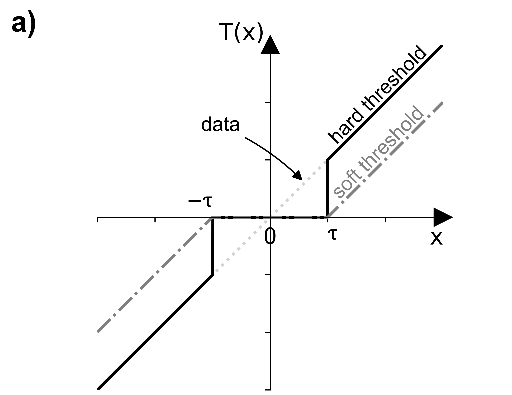
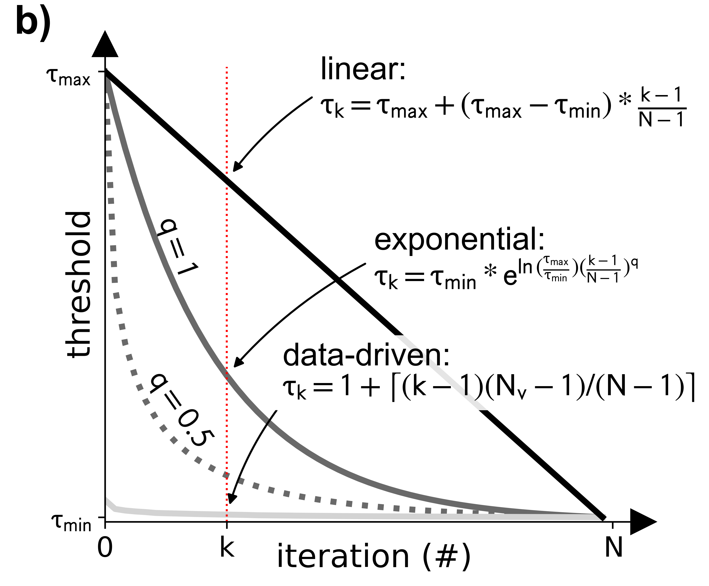
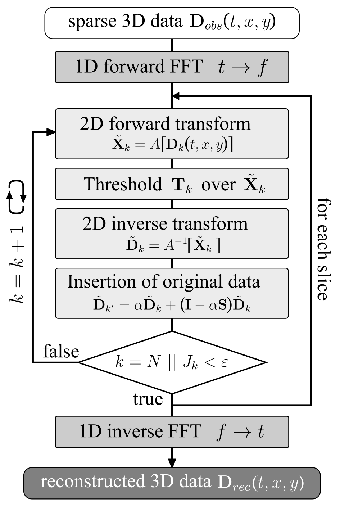
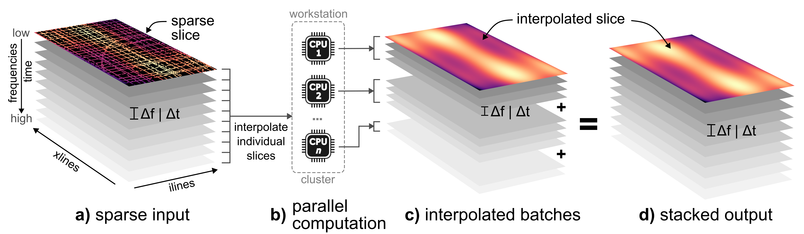

3D interpolation of sparse cube#
Interpolating sparse 3D cube using Projection Onto Convex Sets (POCS) method with user-specified transform (e.g. FFT, wavelet, shearlet, or curvelet).
Warning
Please note that the curvelet transform is only available on Unix-like systems (see Installation instructions).
Description#
For a more detailed description, please refer to the workflow paper.
POCS theory#
The POCS is an iterative algorithm, which can be used to reconstruct seismic data (Abma and Kabir, 2006). The iterative formula of the weighted POCS algorithm at the k-th iteration is:
where \(\textbf{D}_k\) is the reconstructed data at iteration \(k\), \(\alpha\) is a weighting factor (\(0 < \alpha ≤ 1\)), \(\textbf{D}_{obs}\) is the observed sparse data, \(\textbf{I}\) is the identity matrix, \(\textbf{M}\) is the sampling matrix, \(A\) and \(A^{-1}\) the forward and inverse transforms (e.g., FFT), respecitvely. \(N\) is the total number of iterations and \(\textbf{T}_k\) the iteration-dependent threshold.
This threshold operator is either hard (L0 norm) or soft (L1 norm) and illustrated in Figure 1a. For improved convergence, three (3) different threshold models are implemented (Figure 1b).
- linear
- exponential (adjustable via exponent \(q\))
- data-driven
 
Threshold operator and model
A decision for the hard or soft threshold operator is largely dependent on the input data. There are; however, no large difference based on our numerical testing. With regards to the threshold model, the exponential decay function offers the most flexibility while producing reliable results.
Besides the regular POCS, our implementation supports the fast (FPOCS) and data-driven POCS.The FPOCS is based on the work by Yang et al. (2013) as well as Gan et al. (2015, 2016) and implemented as:
with \(v_n\) as controlling parameter with initial values \(v_0 = v_1 = 1\) and \(v_n = (1 + \sqrt{1 + 4 v_n^2})/2\).
Choosing the correct POCS implementation
The FPOCS is our recommended implementation as its convergence is much faster than of the regular and data-driven POCS by using less iterations. The effectiveness of the data-driven POCS is largly dependent on the input data quality and, based on our experiences, not always suitable for field data.
The convergence is monitored by a cost function \(J_k\), which is compared to the user-defined stop criterion \(\epsilon\):
A flowchart of the POCS algorithm is shown in Figure 2:

Implementation#
This POCS implementation designed to interpolate multiple 2D frequency (or time) slices in parallel. The workflow could be relatively easy scaled from a local workstation or laptop to a remote cluster, which is possible by utilizing the dask package.
Each CPU receives a number of 2D slices (e.g., batch_chunk=20), which are save to individual netCDF files (Figure 3c) before all chunks are merged into a single cube (Figure 3d).

For more detail regarding the implementation, please refer to the API documenation.
Usage#
This script is designed to be used from the terminal (i.e. command line).
Command line interface#
The script requires a single netCDF (3D) and a configuration YAML file:
There are two options to run the script. We recommend using the CLI entry point like:
>>> 13_cube_interpolate_POCS /path/to/sparse_cube.nc \
--path_pocs_parameter /path/to/config.yml [optional parameters]
Alternatively, the script can be executed using the (more verbose) command:
>>> python -m pseudo_3D_interpolation.cube_POCS_interpolation_3D /path/to/sparse_cube.nc \
--path_pocs_parameter /path/to/config.yml [optional parameters]
Optionally, the following parameters can be specified:
--help,-h: Show help.--path_pocs_parameter: Path of netCDF parameter file (YAML format). Required!--path_output_dir: Output directory for interpolated slices. Defaults to basedir of input cube.--verbose {LEVEL}: Level of output verbosity (default:0).
Configuration file#
The configuration file is the essential input for the 3D interpolation. In there, all relevant input parameter for the PCOS algorithm need to be specified.
An example file might look like this:
# === NETCDF PARAMETER ===
# dimension name of input cube, e.g. 'freq_twt' (frequency domain) or 'twt' (time domain)
dim: 'freq_twt'
# name of netCDF variable
var: 'freq_env'
# === DASK PARAMETER ===
# number of slices per worker (e.g. CPU)
batch_chunk: 20
# number of dask worker (i.e. CPUs on local machine)
n_workers: 12
# use `processes` (**recommended!**) or `threads`
processes: True # much faster on local machine (LocalCluster)
threads_per_worker: 1
memory_limit: '2.5GB'
# === POCS PARAMETER ===
metadata:
# sparse transform
transform_kind: 'FFT'
niter: 50
eps: 1e-16
# treshold operator (hard, garrote, soft)
thresh_op: 'hard'
# threshold model (linear, exponential, data-driven, inverse-proportional)
thresh_model: 'exponential-1'
# threshold decay kind (values, )
decay_kind: 'values'
# max regularization percentage
p_max: 0.99
# min regularization percentage 1e-4
p_min: 'adaptive'
# weighting factor
alpha: 0.75
# apply np.sqrt to threshold decay
sqrt_decay: False
# POCS version (regular, fast, data-driven)
version: 'fast'
# verbose output to stdout
verbose: False
# apply conservative smoothing filter over interpolated slices prior to merging ('gauss', 'median', False)
apply_filter: 'gauss'
# === DEV ===
output_runtime_results: true
References#
- Abma, Ray, and Nurul Kabir. 2006. “3D Interpolation of Irregular Data with a POCS Algorithm.” Geophysics 71 (6): E91–97. https://doi.org/10.1190/1.2356088.
- Gan, Shuwei, Shoudong Wang, Yangkang Chen, and Xiaohong Chen. 2015. “Seismic Data Reconstruction via Fast Projection onto Convex Sets in the Seislet Transform Domain.” In SEG Technical Program Expanded Abstracts 2015, 3814–19. SEG Technical Program Expanded Abstracts. Society of Exploration Geophysicists. https://doi.org/10.1190/segam2015-5744782.1.
- Gan, Shuwei, Shoudong Wang, Yangkang Chen, Xiaohong Chen, Weiling Huang, and Hanming Chen. 2016. “Compressive Sensing for Seismic Data Reconstruction via Fast Projection onto Convex Sets Based on Seislet Transform.” Journal of Applied Geophysics 130: 194–208. https://doi.org/10.1016/j.jappgeo.2016.03.033.
- Yang, Pengliang, Jinghuai Gao, and Wenchao Chen. 2013. “On Analysis-Based Two-Step Interpolation Methods for Randomly Sampled Seismic Data.” Computers & Geosciences 51: 449–61. https://doi.org/10.1016/j.cageo.2012.07.023